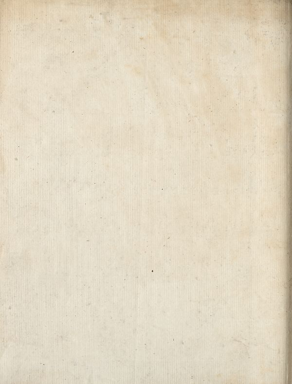

Source · scan and Parse blocks
Layers 1

Parse text by block reading order
- 0Picture
Provenance page_id, checksum, Parse model
- page_id
- britannica:309f765b1ecc83e0a7f7762e44b4a927a7555443:train:2077
- sha256
- b2d54e4a68a40bc5fcab441f145cad23b492703c1a2875add967517dceaaefbd
- Parse
- nvidia/nemotron-3.5-parse · finish stop